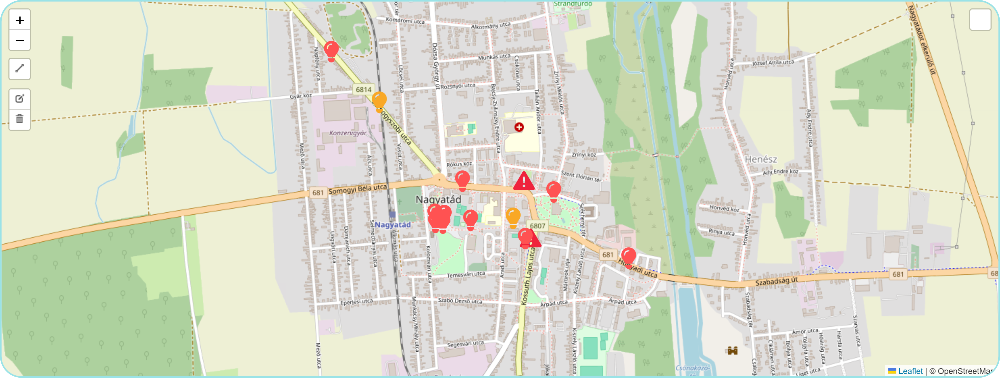

Hiba jelölő térkép
Aktuális napi állapot (Napló)

Aktuális krónikus hibahelyek
| Helyszín | Típus | Leírás | Állapot |
|---|---|---|---|
| Somogyszobi utca 40. | Zárlat | Lámpatest vezetéke zárlatos, csere szükséges. | Folyamatban |
| Kiszely L. u. tömbök | Csőtörés | Mellékleágazás szivárgása az 5. lépcsőház előtt. | Bejelentve |